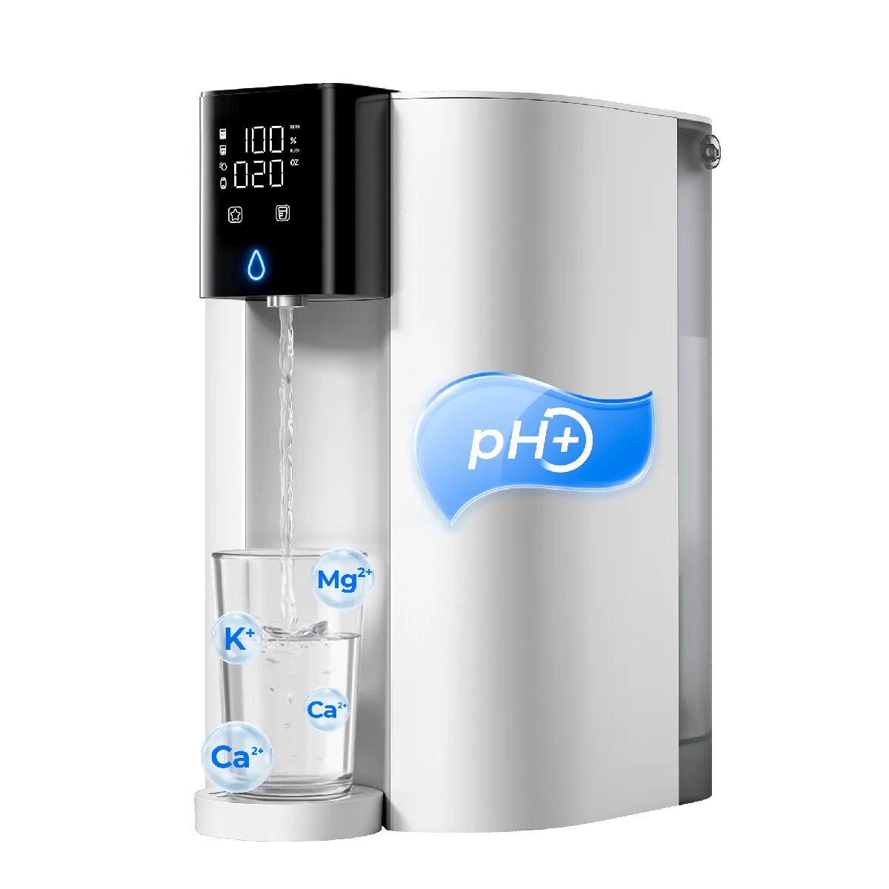

Countertop RO
Waterdrop C1SL Alkalisches Umkehrosmose-System für die Arbeitsplatte
C1SL Alkalisches Umkehrosmose-System für die Arbeitsplatte: aktuelle Umkehrosmoseanlage aus dem deutschen Waterdrop-Sortiment mit den auf der Herstellerseite dokumentierten Leistungs-, Filter- und Bedienmerkmalen.
259,00 €
Technische Daten
| Modell | C1SL |
| Bauart | Auftisch-Umkehrosmoseanlage ohne Festinstallation |
| Filtration | Umkehrosmose mit alkalischer Mineralisierung |
| RO-Leistung | 75 GPD |
| Mineralisierung | Ja, alkalische/mineralische Nachbehandlung |
| Heißwasser | Nein |
| Kaltwasser | Nein |
| Reinwasser-Abwasser-Verhältnis | 3:1 |
| Bedienung | Display mit Filterstatus und Wassereinstellungen |
| Filterwechsel | Vor-/Nachfilter ca. 6–12 Monate; RO-Membran modellabhängig bis 24 Monate |
| Tank | Integrierte Tanks |
| Installation | Keine Festinstallation |
| Zertifizierung | NSF/ANSI 372 (bleifreie wasserberührte Komponenten) |
| Abmessungen | 29,7 × 21,1 × 34,8 cm |
| Garantie | 1 Jahr laut Vergleichstabelle des Herstellers |
| Rohwassertank | 3,25 Liter |
| Reinwassertank | Herausnehmbar |
| Wassertemperatur | Raumtemperatur |
| Anzeige | TDS, Ausgabemenge und Filterstatus |
| Filterlebensdauer | C1RFG ca. 12 Monate |
Datenhinweis
Preis, Bild und technische Angaben stammen von der verlinkten offiziellen Produktseite. Varianten und Verfügbarkeit können sich ändern.